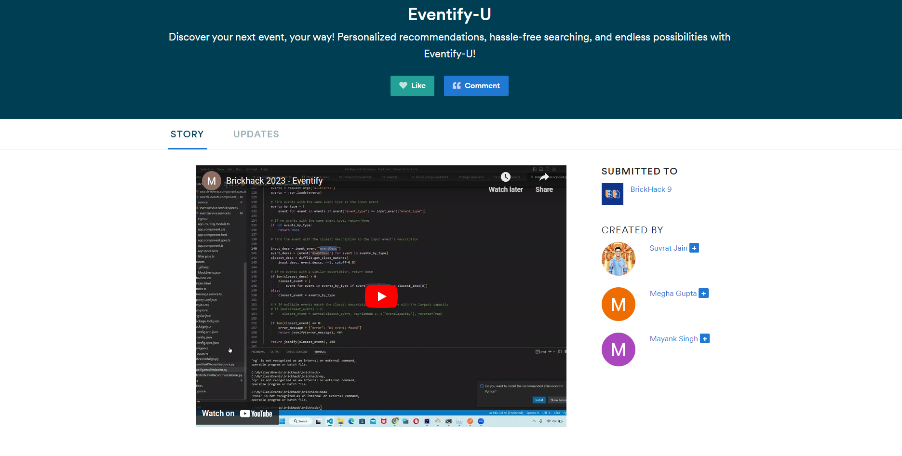

About me
Hi there! I'm Suvrat Jain, a year old data scientist with a background in web and application development. I'm a problem solver at heart and my passion for data science stems from the desire to use technology to tackle real-world challenges.
I hold a Master's degree (M.Sc.) in Data Science from Rochester Institute of Technology, NY and I'm always looking for new and exciting ways to grow my skills and contribute to the field.
I fell in love with the world of code at the young age of 17 and my fascination with technology has only grown stronger since then. With a creative mind and a love for finding patterns in data, data science was the natural next step for me.
I've worked on a variety of projects that showcase my skills in machine learning, computer vision, data wrangling, and data visualization, and I'm always eager to take on new challenges and push the boundaries of what's possible. Some of these projects can be found here.
My 5 year goal is, to successfully marry...my love for building delightful websites and the knack for solving problems using data, to birth a data-driven product that helps in the greater good of the community.
I am constantly looking to enhance my skill set and work on new & exciting projects, and prove to be a reliable asset to both - myself & the organization I work with.
🙋🏻♂️If you are a company/organization looking to hire an enthusiastic individual for an exciting job opportunity, to contribute to your rapid growth, feel free to reach out to me via LinkedIn.
👋🏻Or if you want to drop a hi or brainstorm something that interests you about music, universe, data, or anything in between, feel free to reach out to me here.
education
M.Sc. (Data Science)
Rochester Institute of Technology, NY, United StatesAugust 2021 - May 2023
Courses: Applied Statistics, Java & Python for Data Science, Neural Networks, Time Series Analysis & Forecasting, Visual Analytics
B.Tech (Electronics & Communication Engineering)
Manipal Academy of Higher Education, Dubai, U.A.E.September 2017 - July 2019
Courses: Embedded Systems, Analog Communication, Digital Signal Processing using MATLAB, VLSI Network Design
work experience
Data Science Engineer
Golisano Institute for Sustainability, RIT
Rochester, New York, United StatesMay 2023 - Present
Data Scientist
RIT Golisano Institute for Sustainability
Rochester, New York, United StatesMay 2022 - May 2023
Email Developer/Marketer
Merkle
Pune, Maharashtra, IndiaSeptember 2020 - August 2021
QA Associate
Merkle
Pune, Maharashtra, IndiaJanuary 2020 - September 2020
Web Developer (Intern)
Arachnomesh Technologies Pvt. Ltd.
Navi Mumbai, Maharashtra, IndiaJuly 2018 - September 2018
Software Developer (Intern)
G10 Consultancy Digital Pvt. Ltd
Mumbai, Maharashtra, IndiaMay 2017 - July 2017
SKILLS
Python
TensorFlow
PyTorch
Open CV
Pandas (Python)
NumPy (Python)
SQL
Jupyter
Minitab
Java
HTML5
CSS3
JavaScript
Bootstrap
Angular JS
WordPress
PORTFOLIO
Predicting Hospital Readmissions: A Machine Learning Approach with Logistic Regression, Decision Tree Classifier, and Random Forest Classifier
Binary classification using machine learning models to predict if hospital patients are readmitted within 30 days. Models: Logistic Regression, Decision Tree Classifier, Random Forest Classifier.

Eventify-U
Discover your next event, your way! Personalized recommendations, hassle-free searching, and endless possibilities with Eventify-U!
Winning the Game with Data: An Insightful Exploration of IPL 2008-2020
Exploratory data analysis carried out on the IPL dataset for seasons 2008 - 2020. Data visualizations used to extract insights and factors contributing to victories and defeats.

Moodytector
Moodytector is a simple web application that detects facial features and emotions. Face-api JS was used to build the majority of this app. There are three main features: emotion detection, age prediction, and gender prediction. The site dynamically updates on user input through webcam.

Get Insight into User Engagement with HUE Vision: Real-Time Eye-Tracking Web Application
A web application built using TensorFlow.js to detect and track eye movement through webcam. Application: Analyze users' gaze movement on your website in real time using a webcam. It can be useful for UX researchers when doing usability studies to understand how users respond to the aesthetics of your website.

EmotionWise: Unlocking the Language of Faces with Real-Time Emotion Recognition
EmotionWise is a web application built with Affdex SDK by Affectiva that does real-time emotion recognition to learn the language of faces by visualizing its emotions in real time. Key features include: expression, appearance, glasses, gender & age.

Unlock Your Account with a Smile: A Facial Authentication Web App
Facial authentication web app that detects faces and compares them with your previously stored facial data, if a match is found it logs you into your account. Built using face-api.js.
Try out the demo below!

Building Bridges: Sri Sri University's Model United Nations Website
The Model United Nations is one of Sri Sri University's annual events which provides a platform for students to engage in meaningful discussions to solve real world problems and also learn about underrepresented nations and cultures. This is a responsive website created to showcase and provide information about the event. Built using HTML, CSS, JS.

Spread Smiles, Generate Joy: A Compliment Generator Built with Love
Is there something which is keeping you upset or low? Worry not, am here to stay & cheer you up for as long as you wish.
This is a simple JS based compliment generator that gives you genuine compliments to cheer you up and hopefully, to make your day.
Made with ♥ using JS, HTML, CSS.